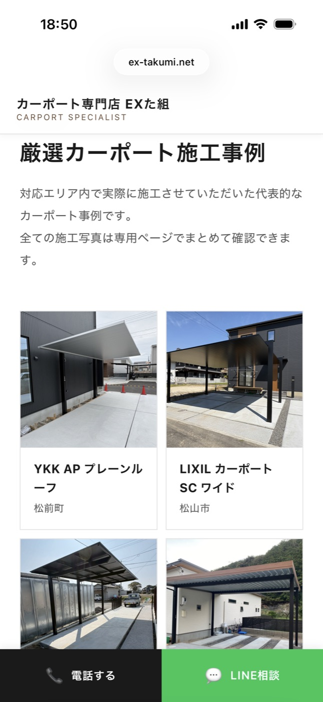
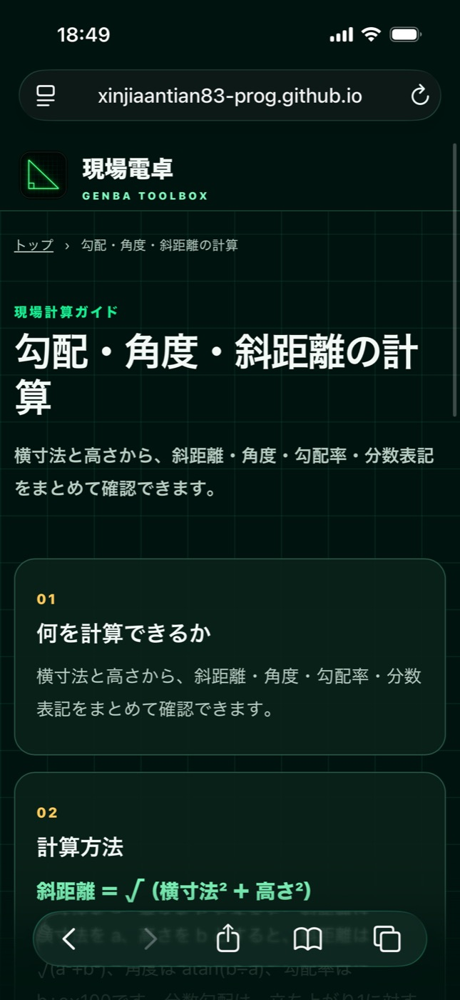
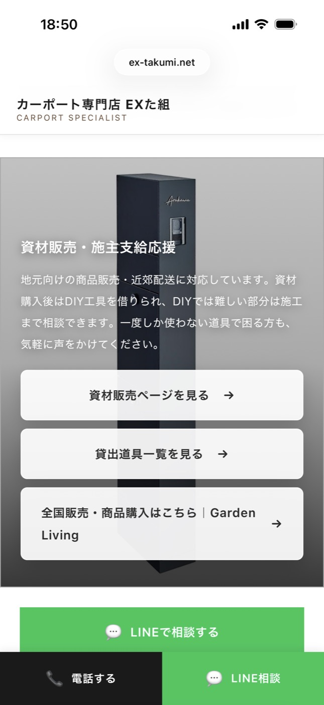
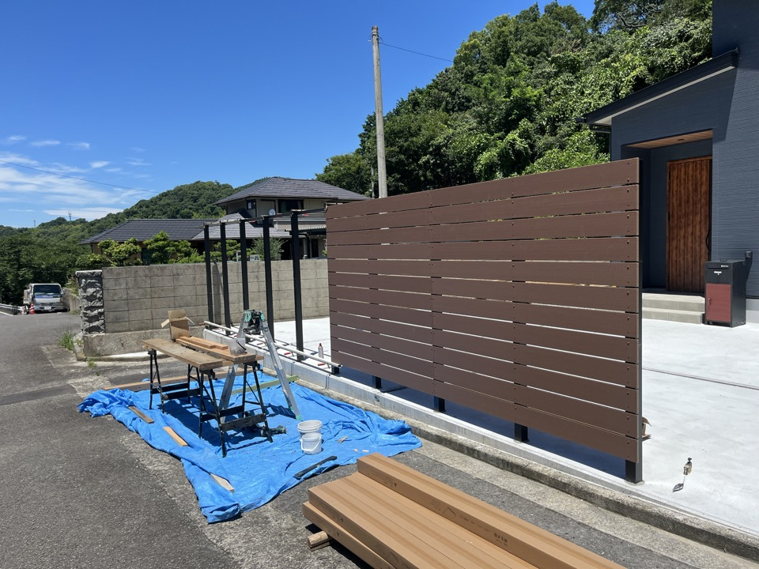

01 / WEBSITEHPはある。でも更新が面倒で
HPはある。でも更新が面倒で
止まっていませんか。
施工写真を撮っても、掲載するまでが面倒。
Web制作会社に、外構業界のことを一から説明するのも面倒。
OUR ANSWER
外構業者が、自分で使い続けられるHPを作ります。
安いHPを売るのではなく、外構屋の業務・客層・施工事例の見せ方を理解した人間が、説明の手間を減らして形にします。
SELECTED WORKS
実際の制作例
企画・制作し、現在も公開・運用しているサイトです。

FOR EXTERIOR
CONTRACTORS直客を増やして、
適正な利益と
仕事の主導権を。
CONTRACTORS直客を増やして、
適正な利益と
仕事の主導権を。
SIMPLE UPDATE
施工写真は、自分で追加できます。
現場で撮った写真を、スマホからそのまま施工事例へ。追加・削除・並び替えまで、施工店様自身で完結できる仕組みを標準仕様にします。
UPDATE FROM YOUR PHONE撮る。追加する。
自分で整える。
自分で整える。
必要な操作だけに絞った、施工店向けの更新画面です。
施工事例写真管理
カーポート施工公開中
削除
門まわり施工非公開
削除
フェンス施工公開中
削除● 公開○ 非公開≡ 並び替え
更新のたびに制作会社へ連絡して、反映時期や追加費用を気にする必要はありません。
写真の追加・削除・並び替え・公開設定まで、ご自身のタイミングで行えます。
STANDARD PLAN
外構施工店に必要な機能を、シンプルに。
標準仕様・基本価格 約20万円
施工事例の更新機能と、外構業者向けの問い合わせ導線を基本にします。
- 施工写真を追加
- 複数枚をまとめて追加
- 画像を削除
- ドラッグ・長押しで並び替え
- カテゴリ変更
- 公開・非公開の切り替え
- スマホ・PCから更新
- 地域SEOを意識した情報設計
- 外構業者向け問い合わせ導線
- 継続保守料金を前提にしない
自分で更新できるため、日常的な更新の維持費を抑えやすい設計です。完全に保守が不要という意味ではなく、必要なサポートや特殊なご要望は内容に応じてご相談いただけます。複雑なシステム開発は対象外です。
02 / DRAWING手描きの現調メモから、
手描きの現調メモから、
提案に使える図面へ。
お客様から頂いた資料や、現調時の手描き図・寸法・写真をお送りください。設計事務所が内容をもとに平面図・パース図を制作し、施工店様の提案を支えます。
資料・手描き図・現場写真
敷地寸法、建物位置、施工範囲など平面図
工事範囲と配置を整理パース図
完成イメージを見える形に提案・成約をサポート
自社での説明と受注を後押し最初から精密な測量やCAD知識は必要ありません。図面上必要な場合のみ、追加寸法をお願いします。
詳細を知りたい方はこちら普段から利用している設計事務所へおつなぎします。
図面作成をご希望の場合は、EXた組が普段利用している設計事務所へ直接おつなぎします。図面制作に関する打ち合わせ・費用・納期・修正等は、施工店様と設計事務所の間で直接進めていただきます。
REGISTRATION